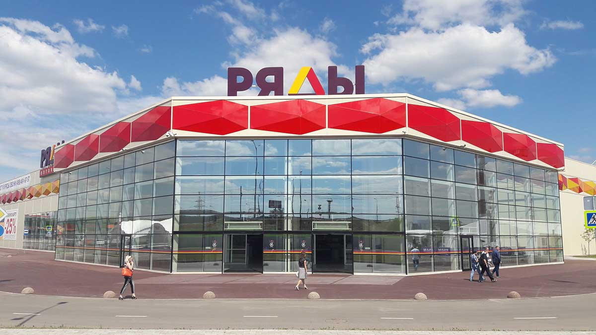

Обсидиан Тим
Более пяти веков художники занимаются рисованием гипсовых слепков с античных скульптур. Художники эпохи Возрождения, в том числе и великий Микеланджело Буонаротти, восстанавливали древние изваяния и делали с них гипсовые отливки. Одним из первых начал коллекционировать гипсовые слепки художник 15-го века Франческо Скварчоне (Падуя, Италия), который использовал их как учебные пособия для своих многочисленных учеников. А что же современные студенты и любители живописи? Какие произведения искусства послужили основой для создания учебных гипсовых бюстов, торсов и статуй?
О нас
Наш магазин "Obsidian Teem" был сделан ради всех подписчиков Obsi и хочет помочь людям получить вещи созданые в Иперии Гусинечек. Сайт не является официальным магазином Обсидиана.
Примеры товаров
Скульптура
Кулон

Кольцо
- Скульптуры
- Слизнекотя
- Чистый Сосуд
- Bongo cat